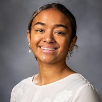

Home
Resume

Silina Damuni's Resume
Education
- Brigham Young University - April 2027
- Business school: Emphasis in Experience Design and Management, Provo, UT
- GPA: 3.7
- Soar
- Hawaiian Civic Club Member
Experience
-
Brigham Young University – Women’s Volleyball - Jan 2023 - Present, Provo, UT
- Position: Setter
- Attend practice 3-4 hours a day, to ensure top performance each game.
- Demonstrate various volleyball drills to over 500 kids for summer camp.
- Effectively accept feedback and critique from the Coaches to be a leader on the court.
- Manage my time wisely each day to ensure I attend practices and classes consistently.
- Love of learning is always a high strength in my life, leading to growth more often in my life.
- Motivated and disciplined to achieve all my goals I set.
- Traveled the world to places such as Egypt, Turkey, and Greece getting to experience different lifestyles in life and in the volleyball world.
-
YSA 220 WARD-Ward Calling - Dec 1st – Present, Provo, UT
- Activities Committee Member
- Plan activities to bring the ward family closer and more knit together to feel united and as one.
- Meet twice a month with my committee, plan activities for the whole month, and go over things at the end of the month.
-
KWKC Coaching Program - Oct 21 - Present, Provo, UT
- A student
- Coached and mentored by people who will help me reach my goals. This included a 10-hour class in one day.
- Created a quality application form to be one out of hundreds of students who applied.
- Consistently set up zoom appointments with the people who help with applications to ensure my application was good.
- Accepted into the program and had the opportunity to be coached by amazing people who will help me achieve my goals.
- From this, I will get my real estate license after all my coaching sessions.
Volunteer Experience
-
Coach Privates - Jul 2023 - Present, Provo, UT
- Teach young girls the basics of volleyball.
- Coach young girls that have dreams to play volleyball in college, working with them for free for 1 hour, helping them get one step closer to achieving their dreams.
- Feel blessed by my community and give back by coaching privates.
-
Visit Old Folks’ Homes
- Spend time with elderly people twice a month, helping them feel loved and not alone, making them feel like I am family to them.
Skills/Interests/Achievements/Abilities
- Participated in the NCAA 2023 Volleyball Tournament
- Love to create and design spaces such as crocheting, designing rooms, and painting.
- 2x State champion for 5A High School Volleyball
- Participated in the NCAA tournament.
- Have a DIY Calendar Business where I make life-size calendars for homes.
- Love to sing and was a part of the BYU Athlete Choir.
- Graduated at the pyramids in Egypt.
- Played with refugee kids in Turkey, discovering a love for connecting and working with young kids.
- Friendly person who loves to talk to people and create new relationships.